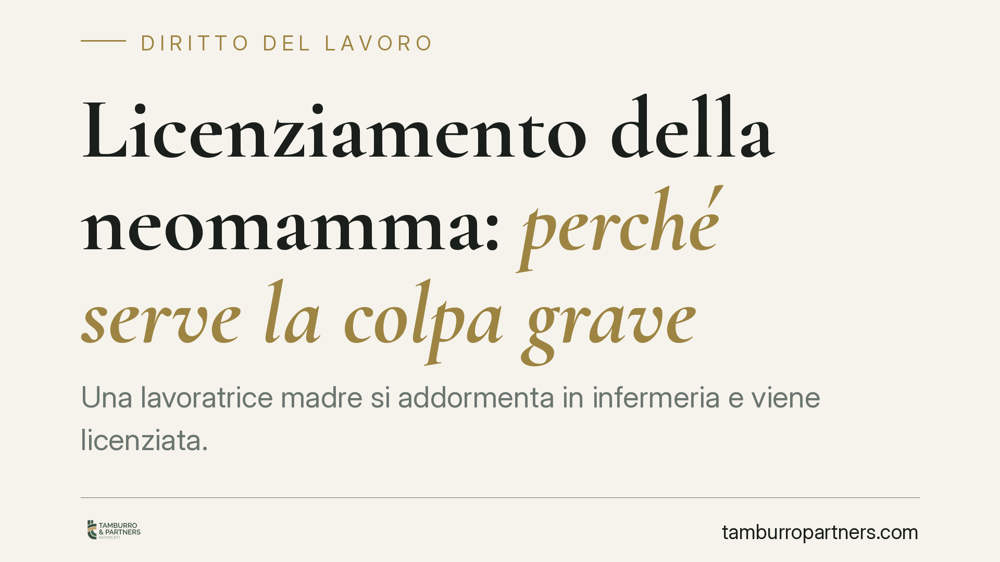

Licenziamento della neomamma: perché serve la colpa grave
Una lavoratrice madre si addormenta in infermeria e viene licenziata. Il Tribunale di Varese dichiara nullo il recesso: entro il primo anno di vita del figlio non basta la giusta causa ordinaria, ma occorre la colpa grave prevista dall'art. 54 D.lgs. 151/2001. La pronuncia riporta l'attenzione su una tutela rafforzata spesso sottovalutata dai datori di lavoro.

Il caso
Una lavoratrice, rientrata al lavoro dopo la maternità, viene sorpresa addormentata durante il turno mentre si trovava in infermeria. Il datore di lavoro procede al licenziamento per giusta causa.
Il Tribunale di Varese, con pronuncia del maggio 2026, dichiara nullo il recesso. Il punto centrale non è tanto la condotta in sé, quanto la fase in cui si è verificata: entro il primo anno di vita del figlio la lavoratrice madre gode di una protezione più intensa rispetto al lavoratore ordinario.
Inquadramento normativo
La disciplina è contenuta nell'art. 54 del D.lgs. 151/2001 (Testo unico maternità e paternità). La norma vieta il licenziamento della lavoratrice dall'inizio della gravidanza fino al compimento di un anno di età del bambino.
Il divieto non è assoluto. La legge individua alcune eccezioni tassative, tra cui la "colpa grave" della lavoratrice, definita dalla norma come giusta causa per la risoluzione del rapporto.
Secondo un orientamento giurisprudenziale consolidato, l'espressione va letta in senso restrittivo: la "colpa grave" richiesta dall'art. 54 sarebbe più stringente della giusta causa ordinaria di cui all'art. 2119 c.c. Si tratta, va precisato, di una lettura interpretativa e non di un dato testuale espresso: la norma parla di colpa grave "costituente giusta causa", e la maggiore severità della soglia è frutto dell'elaborazione dei giudici, orientata dalla ratio protettiva del divieto.
La decisione
Il Tribunale ha ritenuto che l'episodio contestato non integrasse quella colpa grave qualificata che la legge esige per superare il divieto. Ha inciso, nella valutazione, il contesto post partum: la condizione fisica e organizzativa tipica dei primi mesi dopo il rientro è stata considerata elemento rilevante nel giudizio sulla gravità della condotta.
Alla dichiarazione di nullità il giudice ha collegato una condanna economica quantificata in quindici mensilità. Il dato appartiene al caso concreto e va contestualizzato: nel licenziamento nullo la tutela ha di regola natura reintegratoria, con reintegra nel posto di lavoro e risarcimento commisurato alle retribuzioni maturate dal recesso alla reintegra. L'importo riconosciuto riflette dunque tale meccanismo nel caso deciso.
Il regime della nullità
Il licenziamento intimato in violazione dell'art. 54 è nullo. A questa qualificazione si applica la tutela più forte prevista dall'ordinamento.
Il riferimento normativo varia in funzione della data di assunzione: per i rapporti anteriori al 7 marzo 2015 opera l'art. 18, comma 1, L. 300/1970 (Statuto dei lavoratori); per quelli successivi si applica l'art. 2 del D.lgs. 23/2015. In entrambi i casi il regime è quello della reintegrazione piena, tipico dei licenziamenti nulli e discriminatori. L'esatta base applicabile va verificata sul singolo rapporto.
Implicazioni pratiche
Per il datore di lavoro il messaggio è netto: nella fascia protetta il consueto giudizio di proporzionalità sulla giusta causa non è sufficiente. Occorre una condotta di gravità tale da giustificare il superamento di un divieto legale.
Un licenziamento intimato senza questi presupposti non produce una tutela meramente indennitaria, ma espone alla reintegra e al pagamento delle retribuzioni medie. L'errore di valutazione, in questa fase, ha conseguenze economiche significative e difficilmente sanabili.
Per la lavoratrice, il periodo di tutela rafforzata copre un arco temporale definito e va misurato con precisione rispetto alla data di nascita del figlio.
Cosa fare in concreto
- Verificate la fascia temporale. Prima di ogni contestazione disciplinare accertate se la lavoratrice ricada nel periodo protetto (dalla gravidanza al primo anno del bambino).
- Documentate la gravità. Se procedete a recesso, raccogliete elementi che dimostrino una colpa grave qualificata, non una semplice giusta causa ordinaria.
- Valutate misure alternative. Considerate sanzioni conservative o soluzioni organizzative proporzionate alla condotta e al contesto.
- Identificate il regime applicabile. Individuate la data di assunzione per stabilire se operi l'art. 18 St. lav. o l'art. 2 D.lgs. 23/2015.
- Documentate il contesto. Data l'entità delle conseguenze economiche, è opportuna una valutazione tecnica preventiva del singolo caso prima di ogni provvedimento.
In sintesi
Entro il primo anno di vita del figlio il licenziamento della lavoratrice madre resta ammesso solo per colpa grave, letta dalla giurisprudenza in senso più severo della giusta causa ordinaria. Il difetto di questo presupposto comporta la nullità del recesso e l'applicazione della tutela reintegratoria.
Ogni storia di lavoro ha i suoi tempi.
Se gestisci HR e vuoi un confronto su contenzioso, ispezioni o licenziamenti, scrivi allo studio. Ti rispondiamo entro un giorno lavorativo.